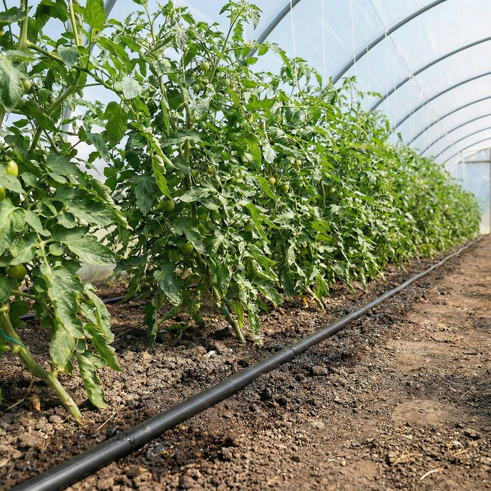
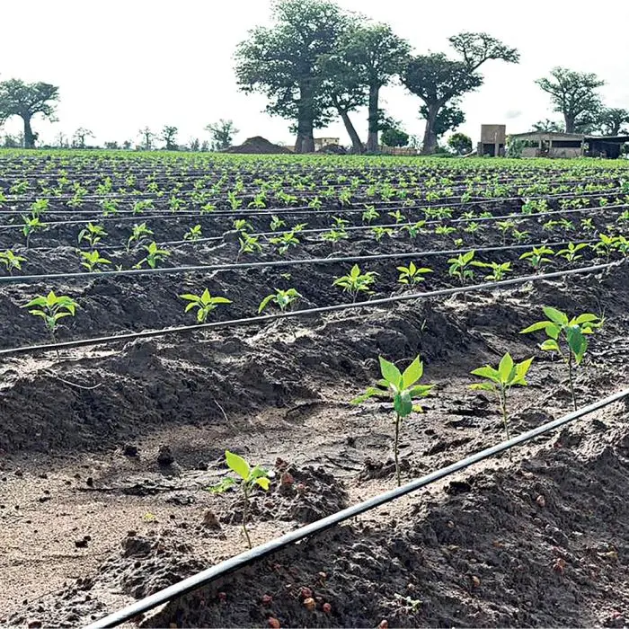

A durable polymer, discarded long before it wears out
ReWeave focuses on thin-wall drip tape: the lightweight irrigation line with a wall of just 0.15 to 0.30 mm (6 to 12 mil) that is laid along crop rows for one to three seasons and then discarded. Modern agriculture depends on it to save water, yet after its short working life this durable polyethylene becomes agricultural plastic waste, even though the material itself is still strong.
Its short life is not the plastic wearing out, but the tiny emitter openings clogging up. Each tape releases water through microscopic holes and narrow labyrinth channels, easily blocked by fine soil particles and mineral scale, mainly limestone (calcium carbonate) from the irrigation water. Once clogged, the tape is pulled out and discarded rather than cleaned.

Of thin drip tape laid across a single hectare (rows about one metre apart)
Of tape discarded per hectare each season, at roughly 8 grams per metre
Of Algerian tomato, watermelon, and pepper grown on thin drip tape, adding up to thousands of tonnes of waste every year
Algeria publishes no drip-tape waste figures, so this is our own estimate. Watermelon alone covers about 63,000 hectares; tomato (~1.6 Mt/yr) and pepper areas derive from national production, giving well over 100,000 hectares across the three crops. At ~10,000 m of tape per hectare and 8 g/m (both measured in the field), these crops alone discard on the order of 7,000 to 9,000 tonnes a year. Sources: FAOSTAT watermelon, FAOSTAT tomato; per-hectare length and weight are ReWeave's own measurements.

